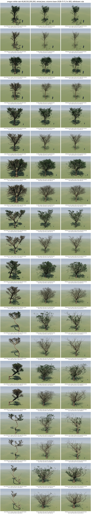
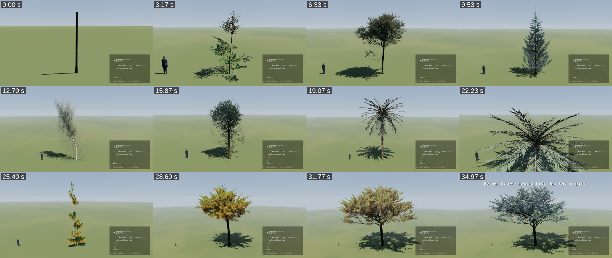
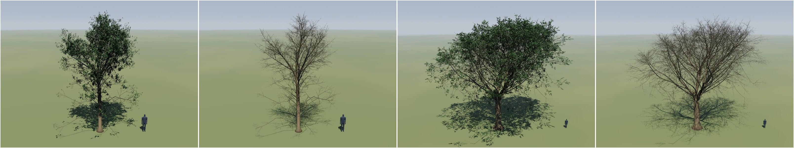
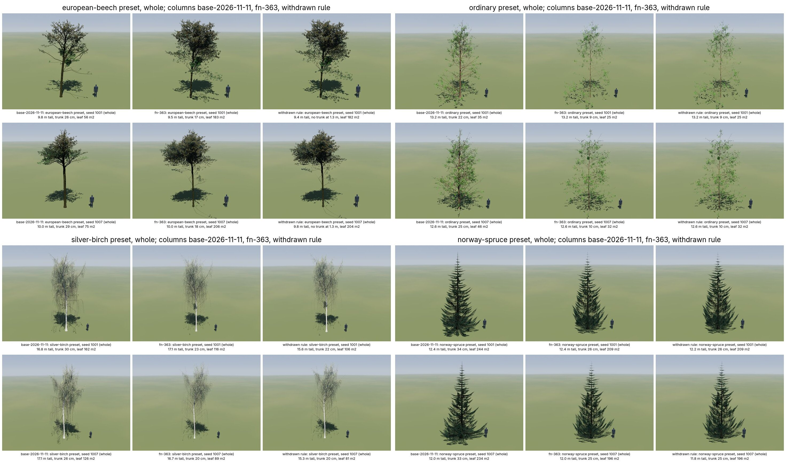
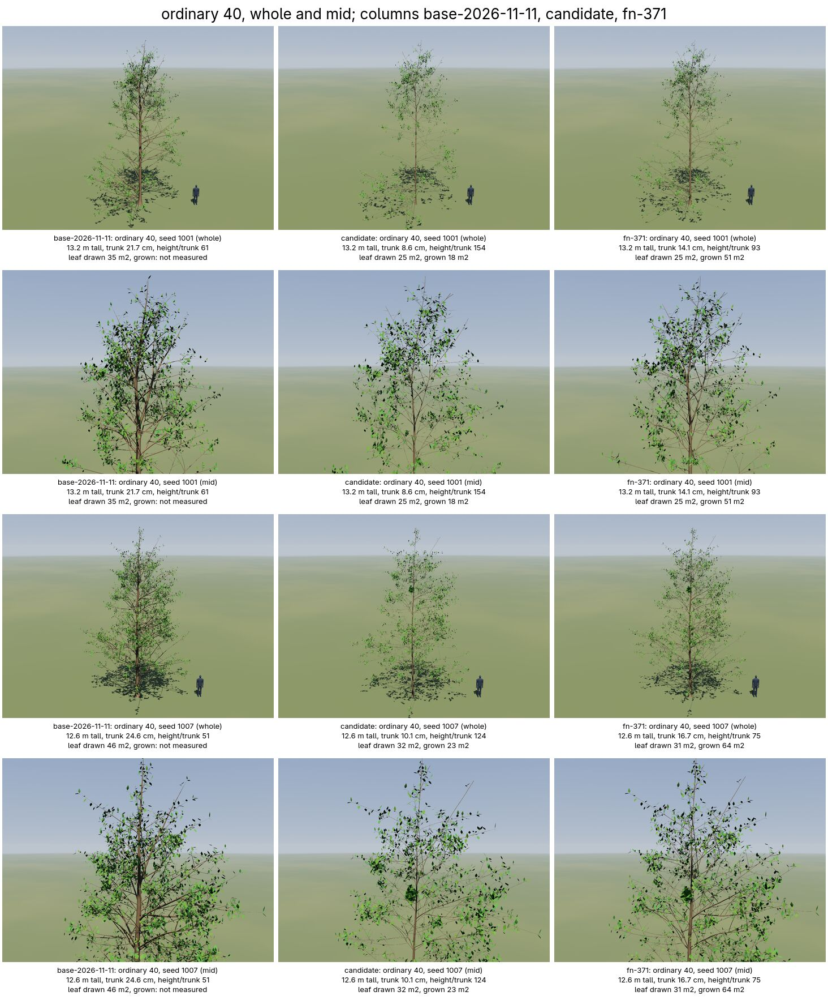
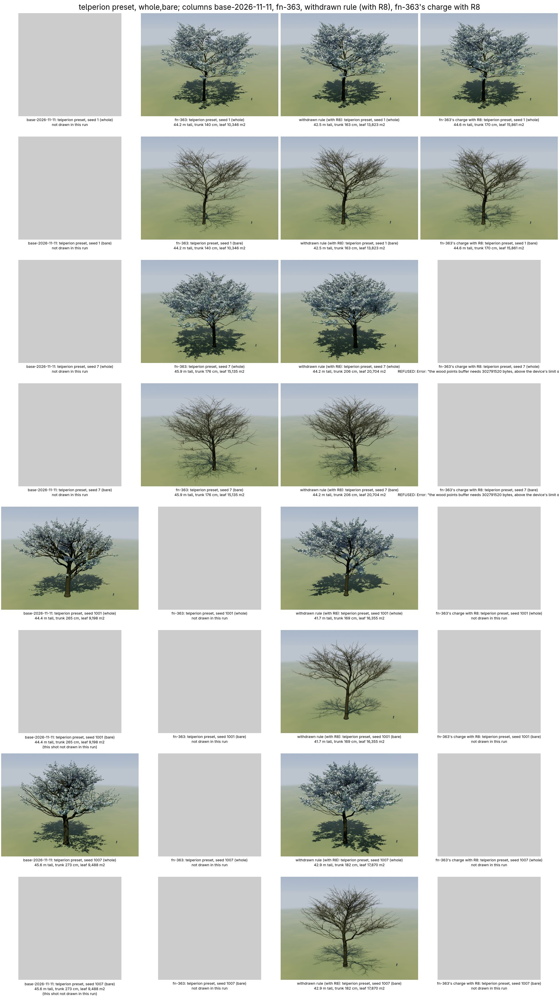
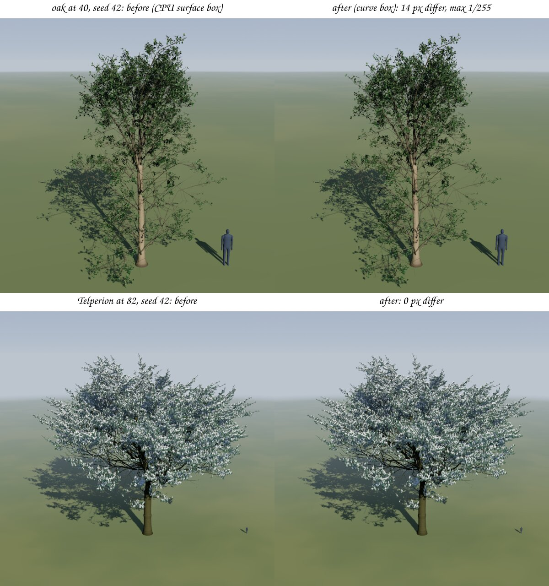

Telperion 0.2.0, where it stands
Updated in place by the host. Last update: 14 Nov 2026, 18:40. The full gate is green on the candidate: 1,398 of 1,398 tests in 1,332 s against a limit of 1,560 s, the package tests 221 of 221.
Unmet, most important first
- Speed is far from the aim. The oak at 40 grows in about 1.06 s on one thread and 0.70 to 0.76 s on four, against the aim of 0.1 s. In the browser it takes 1,444 ms against 0.1.4's 147 ms, and the spruce 6,162 ms against 134 ms; every species is 2.7 to 325 times slower than 0.1.4, which grew far simpler trees. Two rounds of cheaper steps gained under 10% together; the profile is flat. The one route with evidence is counting leafy shoots: they are 86% of the oak's stem units. A first build that kept each counted shoot in place gained only 1.13 times on the oak (1.43 on the beech); the form the design asked for, one flat record a shoot, is estimated at about 0.26 s and is not built. Nothing measured reaches 0.1 s. The choice of route is yours: finish the flat record, or accept the grow time and make distant trees cheap to draw, or let a tree grow less each year.
- The old oak is a real oak's size on one seed in three. Trunk at 300: 1.81, 2.57, 2.39 m against a real open-grown oak's 1.56 to 1.92 m (it was 2.20, 3.13, 2.90). The first seed is inside the range at every age. The other two carry up to twice the leaf; two individuals of one species at one age should not differ that much. Tips end 5 to 10% over the species' recorded 34.8 m. Limbs do not grow too fast: measured per decade, crown radius gains 0.05 to 0.13 m a year against a real 0.08 to 0.11.
- The beech and birch stand on about half an open-grown tree's trunk. Beech at 40: 17 to 18 cm against 32 to 48 cm; birch 20 to 23 cm against about 39 cm. They match trees grown inside a forest. The beech grows 62 to 72 m² of leaf and is drawn with 182 to 204 m²; one leaf for growing and drawing needs the species work. The Two Trees stand on slender trunks under the same crown as before.
- Decision I need: do the renderer's tree calls become async in 0.2.0? Growth cannot move off the page's thread otherwise: the renderer grows and uploads in one call. Today a page freezes for 1.2 s on the oak and 15 to 17 s on the Two Trees. I recommend yes; it is about 150 to 250 lines of Rust and a worker the package ships.
- The Two Trees are heavy. They keep 7.5 and 7.9 million stem units, take 19 to 27 s and about 3 GB to build, and 11 to 12 s warm in the harness against a 1.25 s bar written for the GPU grower that phase 1 deleted. Whether that bar still applies is yours.
- The download is 364,870 bytes compressed against your 250,000. The lowest I measured is 291,123, and that needs the voxel field to stop reading the drawn tree.
- Not built: counted foliage in its flat form (a first form is on a branch, 1.13 times), species re-derived from sources, levels of detail for whole distant trees (measured and designed; a first slice is written and not compiled), the voxel grove from the tree's own cells, the forest rig. A thousand oaks at 30 pixels would cost about 242 ms a frame against a 4 ms aim, nearly all of it sub-pixel twigs.
- A native program on Linux holds 1.7 to 2.0 GB of freed memory on a Two Trees build because of the system allocator's per-thread pools. The gate measures the six whole-catalogue tests on four pools; an embedder would have to limit them too.
- Not checked by anyone: every browser path. Agents cannot drive WebGPU; the harness, the field suite and the shader check need your eyes or a browser run.
- About half of every grown tree's stem units are dead wood still standing; the fork shows a seam; a sudden camera jump can draw one coarse frame.
Met
- The old oak lives and keeps its crown to 300. It was a bare pole with a tuft. The cause was a charge by length of wood where height was meant.
- The oak's trunk follows its own source: sapwood per leaf read by tree height between the two sizes the source measured. The oak at 40 and 80 is inside the real range, where the 11 Nov build stood at about two and two and a half times its top.
- One grower. Pausing at 40 on the way to 80 gives the same tree to the bit.
- The browser's memory: both of the Two Trees build at 1.6 to 2.9 GB; a tree too big is refused by name and the next request builds. The fixed count of 4 million is gone.
- The renderer no longer builds a wood surface it only counted: Telperion's build peak fell from 5,466 to about 3,608 MB. The picture differs by 14 pixels of one level on the oak and none on Telperion.
- Growing a tree through every year (the film, an animation) is 29% faster: 170.5 s to 121.7 s for the Laurelin's 80 years.
- "Oak seed 7 does look like it needs fixing": a sound young tree at 40 and a good open-grown oak at 80.
- The film is re-rendered from its script on this engine: 35 s, 1,050 frames. Attaching it to the README is your step; the file is on disk.
- Codex over the whole diff in two reviews: SHIP both times, four minor defects found, all fixed. The package tests pass, 221 of 221. Shipped sizes are inside their ceilings.
- A native entry is documented and tested; the per-species coarse settings are deleted; a changelog and a migration note exist.
Corrections to what I told you
- "The young trees are worse than on 11 Nov" compared them with a build whose trunks were too thick. Against measured trees the oak and spruce are right; the beech and birch are a forest tree's, not an open-grown tree's.
- "The Laurelin went from 12 s to 170 s" compared two growers. The 12 s was the GPU grower that phase 1 deleted.
- "The spruce's needle age is misread and makes 1.8 times the shoots" was wrong: read in full, the sources give 5.1 to 7.2 years and the preset's 5.5 is inside.
- "The old oak grows too fast" did not hold in the per-decade census.
- The Two Trees keep 7.5 and 7.9 million stem units at seed 42, not the 5.4 and 6.1 million I quoted.
- The oak's "1.44 s" was read on a loaded machine; quiet, it is about 1.06 s.
- I opened eight fronts at once on 14 Nov while your other work held the machine. Three came back with code that had never compiled.
- My second old-oak rule ("a tip near its limit lays shorter shoots") was a mistake of design; withdrawn with the fix built on it.
Phases
| Phase | State | Result |
|---|
| 0. One source of truth | done | One goal, your rulings in one file, the scoreboard. |
| 1. One grower | done | The GPU grower is deleted. |
| 2. Wood that lasts | built | Trunks follow leaf; the oak's rows follow its source. |
| 3. A crown that renews | built | Charge by height. The old oak's size is met on one seed in three. |
| 4. Species on sources | surveyed, not built | Most rows have no published measurement; they stay listed estimates. |
| 5. Counted foliage, speed | partly | Two speed rounds; counting built in a first form, 1.13 times, not merged. |
| 6. Drawn fast, website, entry | partly | Native entry, download cut, browser memory, the uncounted surface; distant trees designed. |
| 7. Candidate | done | Gate, review, release checks, film; the draft pull request. |
The old oak, trunk at 1.3 m
| Age | Seed 1001 | Seed 1007 | Seed 1012 | Real open-grown oak |
|---|
| 40 | 31 cm | 40 cm | 34 cm | 28 to 40 cm |
| 80 | 75 cm | 103 cm | 82 cm | 56 to 79 cm |
| 120 | 1.06 m | 1.50 m | 1.24 m | 0.83 to 1.09 m |
| 200 | 1.53 m | 2.19 m | 1.92 m | 1.21 to 1.52 m |
| 300 | 1.81 m | 2.57 m | 2.39 m | 1.56 to 1.92 m |
The sheets below were drawn before the sapwood change: the crowns are the candidate's, the old trunks are drawn thicker than they now grow.

The film on this engine
Twelve frames across the 35 seconds.

The oak on seed 7

Beech, ordinary tree, birch and spruce: the 11 Nov build beside the candidate
First column the 11 Nov build, second the candidate; ignore the third (a withdrawn rule).


Telperion
Second column is the candidate.

The renderer without the counted surface

The 11 Nov build and 0.1.4


Where the records are
- The goal and its log:
.flow/specs/fn-351-020-the-release-candidate.md
- Your rulings:
RULINGS.md in this folder
- Trees against measured trees:
TREES-AGAINST-NATURE.md; the oak's rows: OAK-SAPWOOD-BY-SIZE.md; the census: OAK-DECADE-CENSUS.md on branch fn-351-oak-decade-census
- Counting:
COUNTING-PROPOSAL.md, COUNTING-PROBE.md
- Release checks:
RELEASE-CHECKS.md; memory: NATIVE-PEAK.md; distant trees: DISTANT-TREES.md on branch fn-351-distant-trees